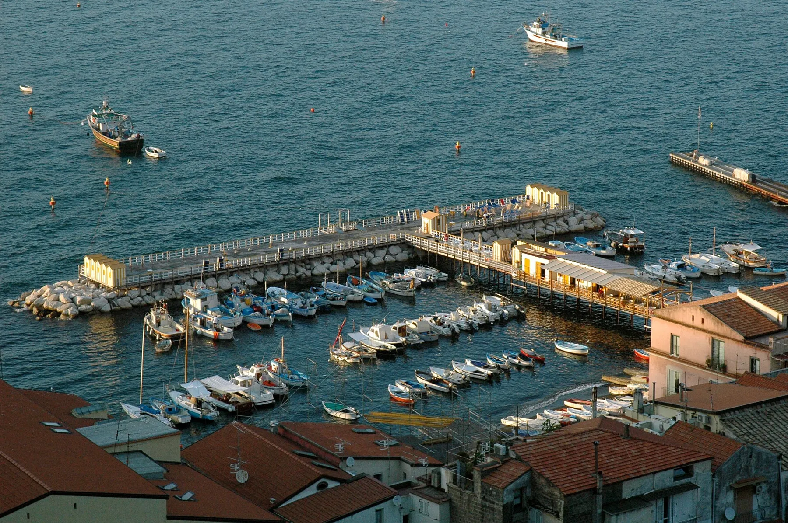
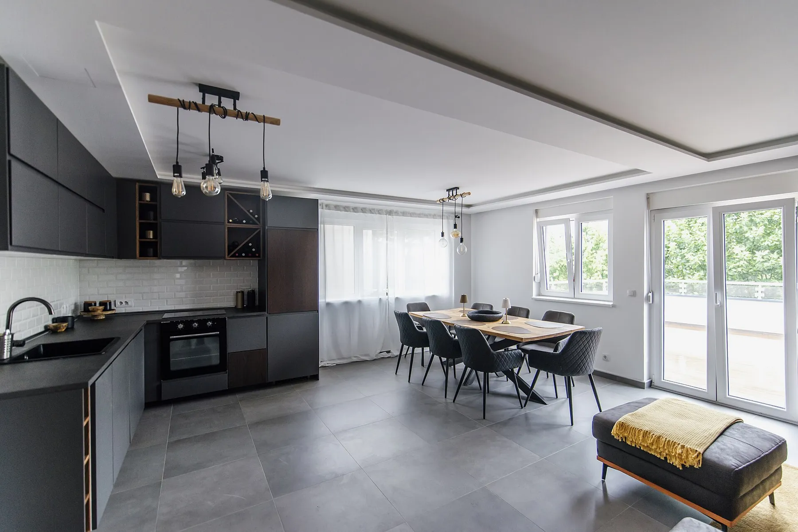
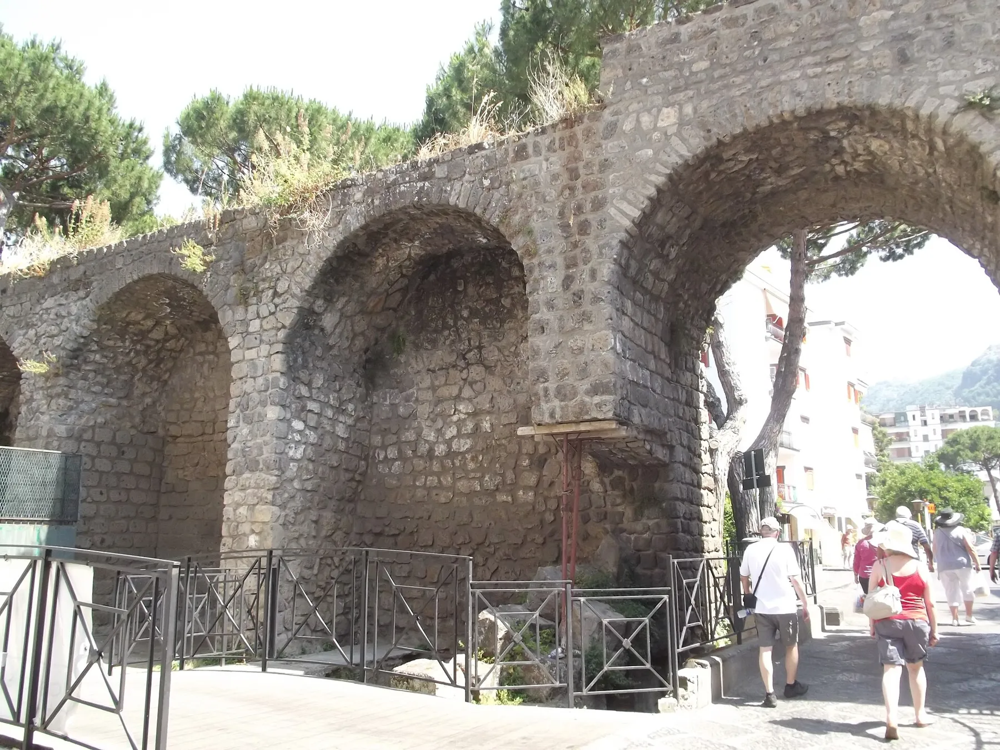
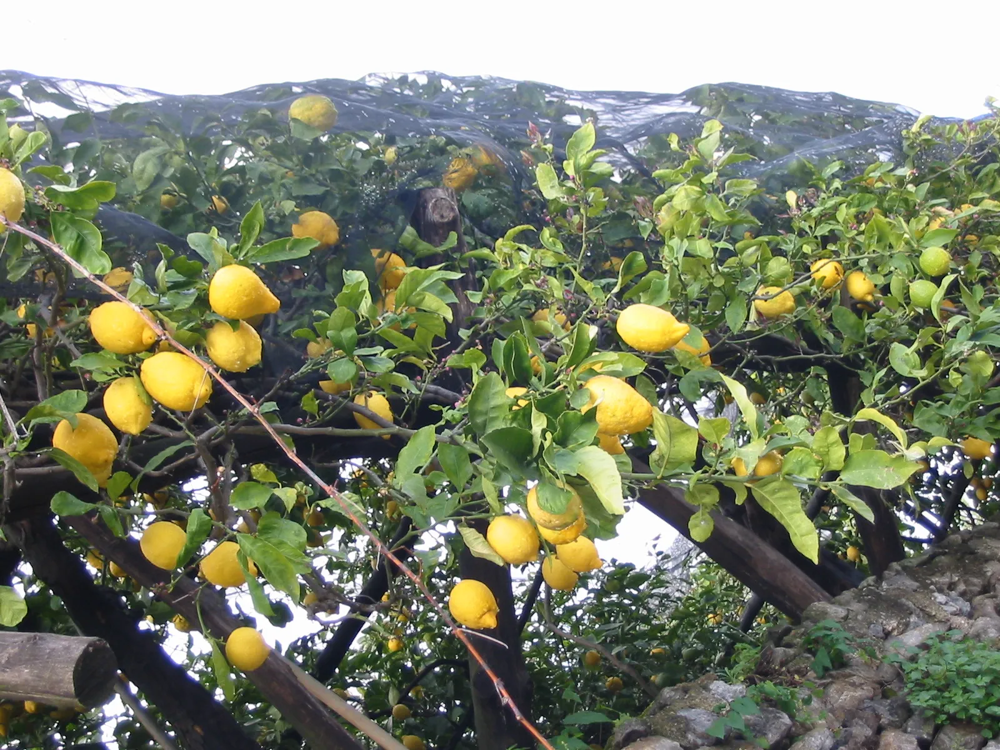

Un appartamento luminoso con terrazza sul golfo, a cinque minuti a piedi da Piazza Tasso. Prenota direttamente: miglior prezzo garantito, senza commissioni.
Arredi moderni, tanta luce naturale e una terrazza di 25 m² affacciata sul Golfo di Napoli, con il Vesuvio di fronte. Due camere silenziose, cucina completa, tutto pensato per sentirsi a casa.

Tocca una foto per vederla a tutto schermo.
Dal porto di Sorrento partono gli aliscafi per Capri, Positano e Amalfi. La casa è il punto di partenza ideale.


Prezzi d'esempio a notte per l'intero appartamento, fino a 4 ospiti. Soggiorno minimo 3 notti.
Tassa di soggiorno comunale esclusa. Pulizia finale inclusa.
«Svegliarsi con il Vesuvio davanti non ha prezzo. Casa pulitissima e vicina a tutto.»— Testo d'esempio
«Perfetta per una famiglia: spaziosa, fresca e silenziosa. Torneremo.»— Testo d'esempio
«Host gentilissimo, ci ha consigliato i ristoranti migliori di Sorrento.»— Testo d'esempio
Queste recensioni sono testi dimostrativi, non opinioni di ospiti reali.
Rispondiamo entro poche ore, in italiano, inglese o tedesco.
Dalle 15:00 alle 20:00, di persona o con cassetta delle chiavi. Il check-out è entro le 10:30.
Sì, animali di piccola taglia su richiesta.
Con il bus diretto per Sorrento (circa 75 minuti) o con un transfer privato che possiamo prenotare per te.
Perché paghi il prezzo più basso: nessuna commissione delle piattaforme e un contatto diretto con chi ti ospita.